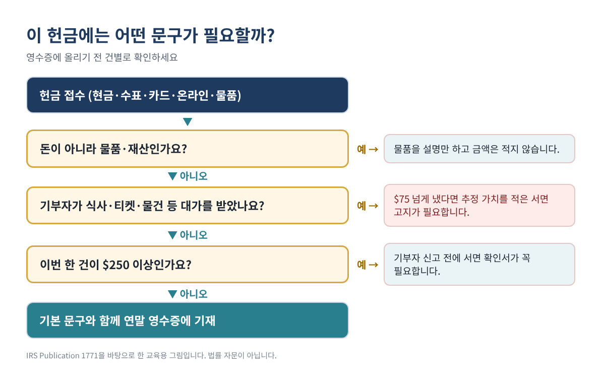
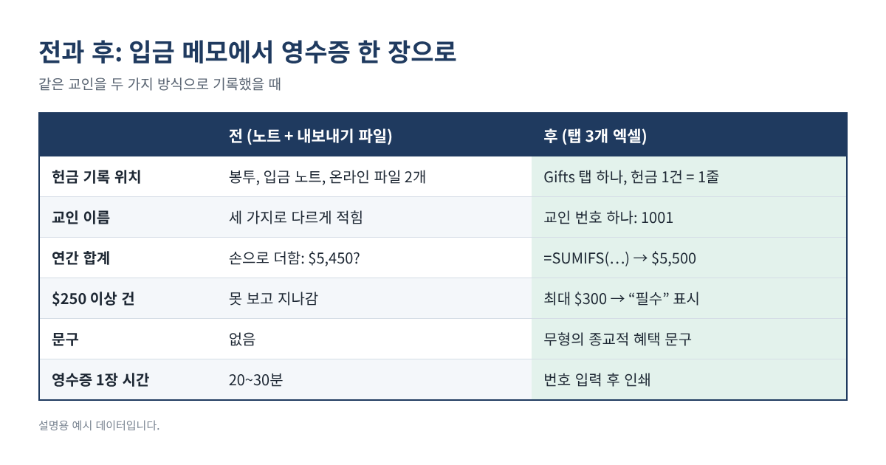
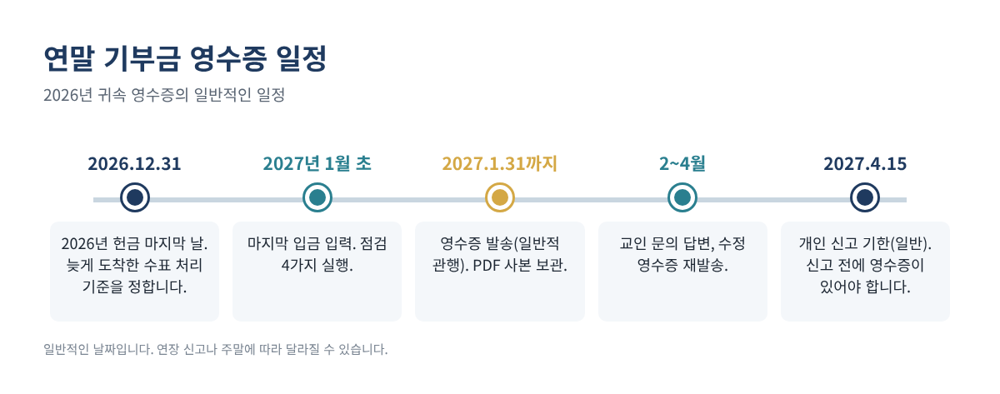

매년 1월이 되면 교회 재정부나 단체 총무에게 같은 부탁이 몰립니다. "작년 헌금 영수증 좀 받을 수 있을까요?" 헌금 봉투, 입금 노트, 온라인 헌금 내역이 따로 흩어져 있으면 교인 한 분 한 분의 영수증을 맞추는 데 주말이 통째로 들어가고, 합계 하나만 틀려도 곤란한 전화를 받게 됩니다.
다행히 영수증에 들어가야 할 IRS 요건은 몇 줄밖에 안 되고, 탭 세 개짜리 엑셀만 있으면 교인 번호 하나로 1쪽짜리 영수증을 바로 뽑을 수 있습니다. 이 글에서는 요건, 표 구성, 그대로 입력할 수 있는 수식, 인쇄 전 점검까지 순서대로 설명합니다.
이런 분께 필요합니다: 한인 교회·사찰·소규모 비영리 단체에서 세금 공제용 헌금·기부를 받고 연말 기부금 영수증(giving statement, contribution statement)을 보내는 재정 담당자와 봉사자.
2026년이 특히 중요한 이유: 2026년 귀속분부터는 표준공제를 받는 사람도 자격 있는 단체에 낸 현금 기부를 최대 $1,000(부부 공동신고 $2,000)까지 공제받을 수 있습니다. 그동안 영수증을 찾지 않던 교인들도 이번에는 요청할 가능성이 높으니, 2027년 1월에는 요청이 늘어난다고 보고 준비하세요.
기부자는 한 번에 $250 이상 낸 기부에 대해 단체의 서면 확인서가 없으면 공제를 받을 수 없습니다. IRS가 정한 필수 내용은 다음과 같습니다.
| 필수 항목 | 적는 내용 | 예시 |
|---|---|---|
| 단체 이름 | 등록된 법적 이름 | Example Community Church |
| 현금 기부 금액 | 합계 또는 날짜별 건별 금액 | $5,200 (52건) |
| 물품 기부 | 설명만, 금액은 적지 않음 | “책 2상자” |
| 재화·용역 제공 여부 | 없었다는 문구, 또는 설명과 선의의 추정 가치 | 만찬 가치 $60 |
| 종교 단체 | 무형의 종교적 혜택만 제공했다는 문구(해당 시) | 교회 기본 문구 |
표 1. 서면 확인서 필수 내용(IRS Pub. 1771). 예시 값은 설명용입니다.
많이 헷갈리는 두 가지가 있습니다. 첫째, $250 기준은 건별이며 합산하지 않습니다. 매주 $100씩 1년에 $5,200을 냈더라도 건별로는 $250 미만입니다. 다만 기부자는 모든 현금 기부에 대해 은행 기록이나 단체의 서면 기록을 갖고 있어야 공제를 받을 수 있으므로, 모든 헌금이 나오는 연말 영수증이 서로에게 가장 편합니다. 둘째, 확인서는 제때(contemporaneous) 받아야 합니다. 기부자가 세금 신고를 하는 날과 신고 기한(연장 포함) 중 빠른 날까지 받아야 하므로 대부분 1월에 보냅니다.
정해진 IRS 양식은 없습니다. 편지, 엽서, 이메일, 컴퓨터로 만든 영수증 모두 가능하고, 1년 치를 영수증 한 장으로 정리해도 됩니다. 사회보장번호(SSN)는 필요 없으니 영수증에 넣지 마세요.

Excel이나 Google Sheets 모두 됩니다. 1년에 파일 하나씩 씁니다.
단체의 법적 이름, 주소, EIN, 영수증 연도, 서명자 이름과 직책, 기본 문구를 적습니다. 교회는 보통 "No goods or services were provided in exchange for these contributions other than intangible religious benefits.(이 헌금에 대해 무형의 종교적 혜택 외에 제공된 재화나 용역은 없습니다.)"라는 문구를 씁니다. 헌금 항목(일반, 건축, 선교, 구제 등)도 목록으로 만들어 두면 드롭다운으로 고를 수 있습니다.
교인 또는 가정당 한 줄입니다. A 교인 번호, B 영수증에 찍힐 이름, C 주소, D 이메일. 번호는 1001, 1002처럼 단순하게 정하고 헌금 봉투나 온라인 헌금 계정에 같이 적어 둡니다. 그다음 수식 세 칸을 추가합니다(2행 기준, 아래로 복사).
E 연간 합계: =SUMIFS(Gifts!$E:$E, Gifts!$B:$B, A2) F 가장 큰 1회 금액: =MAXIFS(Gifts!$E:$E, Gifts!$B:$B, A2) G $250 확인서: =IF(F2>=250, "필수", "권장")
입금할 때마다 헌금 한 건을 한 줄로 적습니다. A 날짜, B 교인 번호, C 항목, D 방법(현금·수표·카드·온라인·주식·물품), E 금액(현금성 기부만), F 기부자가 받은 것의 가치(식사권, 티셔츠 등), G 물품 설명(금액 없이). 보조 열 두 개를 추가합니다.
H 고지 표시: =IF(AND(E2>75, F2>0), "대가성 고지 필요", "") I 공제 가능액: =MAX(0, E2-F2)
| 날짜 | 교인 번호 | 항목 | 방법 | 금액 | 받은 대가 | H 표시 | I 공제 가능액 |
|---|---|---|---|---|---|---|---|
| 01/04 | 1001 | 일반 | 수표 | $100 | $0 | $100 | |
| 03/15 | 1001 | 건축 | 온라인 | $300 | $0 | $300 | |
| 05/09 | 1002 | 선교 | 현금 | $150 | $60 | 대가성 고지 필요 | $90 |
| 11/30 | 1003 | 일반 | 물품 | $0 | $0 | $0 (설명만) |
표 2. 보조 열 두 개를 넣은 Gifts 탭. 모든 줄은 예시 데이터입니다.
H열이 중요한 이유는 기부자가 $75 넘게 내고 대가를 받은 경우, 단체가 받은 것의 선의의 추정 가치와 "초과분만 공제된다"는 내용을 서면으로 알려야 하기 때문입니다. 이 고지를 빠뜨리면 건당 $10, 행사나 우편 발송 한 번당 최대 $5,000의 벌금이 있습니다.
B2 칸에 교인 번호를 넣으면 나머지는 자동으로 채워집니다.
이름: =XLOOKUP($B$2, Donors!$A:$A, Donors!$B:$B, "없음") 주소: =XLOOKUP($B$2, Donors!$A:$A, Donors!$C:$C, "") 항목별 합계: =SUMIFS(Gifts!$E:$E, Gifts!$B:$B, $B$2, Gifts!$C:$C, A10) 건별 내역: =FILTER(Gifts!A2:E3000, Gifts!B2:B3000=$B$2, "내역 없음") 받은 대가: =SUMIFS(Gifts!$F:$F, Gifts!$B:$B, $B$2)
XLOOKUP과 FILTER는 Excel 365/2021과 Google Sheets에서 됩니다. 이전 버전 Excel이라면 이름은 VLOOKUP으로 찾고, 건별 내역은 Gifts 탭을 교인 번호로 정렬해서 인쇄하세요. 합계 아래에는 기본 문구, 물품 기부 설명("옷 3봉지, 단체는 금액을 기재하지 않음"), 서명란을 둡니다. PDF로 저장하고 B2만 바꿔 반복하면 됩니다.

아래 네 가지는 모두 0이 나와야 합니다.
합계 일치: =SUM(Donors!E:E) - SUM(Gifts!E:E) 없는 번호: =SUMPRODUCT((Gifts!B2:B3000<>"")*(COUNTIF(Donors!A:A, Gifts!B2:B3000)=0)) 입금 일치: =SUM(Gifts!E:E) - [회계 프로그램의 연간 헌금 수입 합계] 연도 밖 날짜: =COUNTIFS(Gifts!A:A, "<1/1/2026") + COUNTIFS(Gifts!A:A, ">12/31/2026")
가장 중요한 것은 입금 일치입니다. 헌금 기록 합계가 회계 프로그램에 기록된 그해 헌금 수입과 다르면, 영수증을 보내기 전에 차이를 먼저 찾아야 합니다.
| 교인 | 헌금 | 합계 | 가장 큰 1회 | $250 확인서 |
|---|---|---|---|---|
| 1001 (예시) | 매주 수표 52건 + 온라인 1건 | $5,500 | $300 | 필수 ($300 건) |
| 1002 (예시) | 매월 현금 12건 + 만찬 | $1,350 | $150 | 권장, 만찬은 고지 필요 |
| 1003 (예시) | 옷 기부 | 설명만 | 해당 없음 | 물품 설명, 금액 없음 |
표 3. 예시 교인 세 분의 Donors 탭 결과.

건별로 $250이 넘지 않으니 건별 서면 확인서가 꼭 필요한 것은 아닙니다. 하지만 기부자는 모든 현금 기부에 은행 기록이나 서면 기록이 있어야 공제를 받을 수 있어서, 연말 영수증 한 장이 가장 쉬운 방법입니다.
네. 필수 내용이 들어 있다면 연간 요약 형태의 확인서 한 장으로 여러 건을 증빙할 수 있다고 IRS가 안내합니다.
실제 기한은 기부자 쪽에 있습니다. 기부자가 신고하기 전(또는 신고 기한 중 빠른 날)까지 받아야 합니다. 1월 말까지 보내는 것이 일반적이며 IRS Publication 1771에도 그렇게 나옵니다.
저가 기념품이나 작은 혜택은 IRS가 매년 물가에 맞춰 정하는 한도 안이면 무시할 수 있습니다. 한도 금액은 해마다 바뀌니 IRS.gov에서 그해 금액을 확인한 뒤 적용하세요.
플랫폼 영수증에는 단체의 재화·용역 문구가 빠져 있을 수 있습니다. 그래서 많은 단체가 모든 방법을 합친 연말 영수증을 한 장 더 보내 교인이 완전한 기록 하나를 갖게 합니다.
직접 만들기 번거로우시다면, 완성된 Donation Tracker & Year-End Giving Statements 2026 엑셀(영문판·영한판)을 Etsy와 Gumroad 매장에서 구하실 수 있습니다.
이 글은 교육용 정보이며 세무·법률 자문이 아니고, 어떤 결과도 보장하지 않습니다. 규정은 바뀔 수 있으니 최신 IRS 안내를 확인하시거나 전문가와 상의하세요.